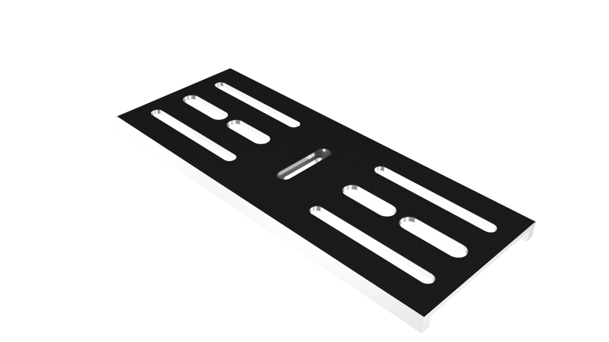

CNC Setup SheetKontrolleret dokument · Datum Prototyping
Dokument-IDSETUP-TAC-001
RevisionA
Udstedt2026-10-06
Side1 / 2
Fusion-aligned production setup
Tac Table
Opspænding, værktøjer, WCS og operationsrækkefølge til CNC-fræsning på Haas Mini Mill.
NC-programO8001

Opspænding · maskinskruestik 200 mm
- Bakker: Hårde bakker med skiftende parallelklodser.
- OP1–OP3: Stabil indspænding med fokus på fuld understøtning.
- OP4–OP5: Genopspænd med reduceret moment før sletspån for at begrænse deformation i den tynde plade.
- Før hver vending: Rens bakker, parallelklodser og anlægsflader for spåner.
Tabellen kan rulles vandret på små skærme.
| T# | Beskrivelse | Udhæng | Fløjter (Z) | Primær funktion |
|---|---|---|---|---|
| T1 | Planfræser Ø44 mm · HM | 30 mm | 4 | Facing af top |
| T2 | Pindfræser Ø8 mm · HM Alu | 25 mm | 3 | Adaptive skrub / 3D Flat |
| T3 | Spotdrill Ø8 mm · HSS | 20 mm | 2 | 0,2 mm chamfer |
| T4 | Pindfræser Ø4 mm · HSS | 20 mm | 3 | Indvendige spor |
| T5 | Pindfræser Ø10 mm · HSS | 35 mm | 4 | Sletspån omrids |
CNC Setup SheetSETUP-TAC-001 · REV A · SIDE 2 / 2
Tabellen kan rulles vandret på små skærme.
| Setup | WCS | Operationer / værktøjskald |
|---|---|---|
| OP1 | G54 | Facing (T1) → Adaptive skrub (T2) → Slet omrids (T5) |
| OP2 | G55 | Pocket spor (T4) → Slet spor (T4) → Chamfer (T3) → 3D Flat (T2) |
| OP3 | G56 | Adaptive skrub + slet af bund (T2) |
| OP4 | G57 | 3D Flat bund (T2) → Vægtreduktion (T2) → Slet vægtreduktion (T2) |
| OP5 | G58 | Chamfer bund (T3) |
Kvalitetskontrol før frigivelse
- Planhed: Kontroller med vippeindikator før emnet tages ud efter OP5.
- Kontroller at alle anlægsflader er fri for spåner ved hver genopspænding.
- Verificer spillerum og bundflader i vægtreduktionstasker.
- Visuel kontrol af kanter og chamfers før emnet frigives fra setup.